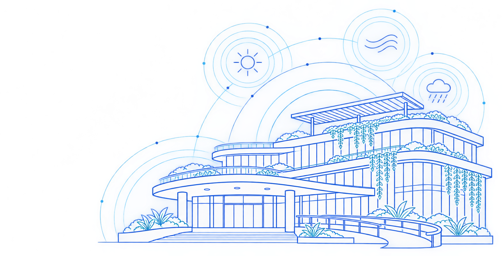
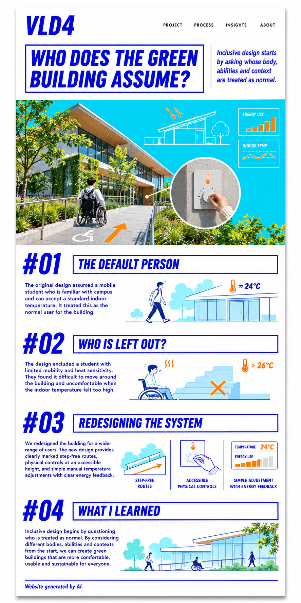

Access before adaptation
The main route, entrance, and controls should work for different bodies from the beginning.


In my green-building project, I first focused on energy performance, shared indoor comfort, and the movement of people through the building. Without noticing it, I imagined a default user who could walk easily between rooms, use stairs when needed, read signs quickly, and understand the campus layout. I also assumed that this person could accept a standard indoor temperature or simply move to another space when the room felt too warm or too cold.
This default person was close to me. They were a student who was physically mobile, familiar with digital systems, comfortable using an app, and confident enough to ask staff for help. Because these actions feel easy to me, I treated them as normal. The design therefore placed too much responsibility on the user. It expected people to adapt their route, their body, and their schedule to the building.
The person most likely to be excluded is a student with limited mobility and strong sensitivity to heat. They may use a wheelchair, walking aid, or move slowly because of pain or fatigue. When a room becomes uncomfortable, they cannot always change location quickly. A route to another space may include steps, heavy doors, long distances, or unclear signs. Even when a step-free route exists, it may be hidden or much longer than the main route.
Environmental controls can create another barrier. A thermostat may be mounted too high, locked for staff, or controlled only through a phone application. The user may not know whether the system received their request or how long the change will take. The problem is therefore not the person's body. The problem is a design that offers too little choice, feedback, and control.
I would redesign the building around the excluded user. First, every main destination should have a clearly marked, step-free route. The route should not feel like a secondary entrance. Signs should show distance, slope, lift access, and the comfort conditions of nearby spaces. This information helps a person choose a route before they become tired or uncomfortable.
Second, important controls should be available at an accessible height. The system should include physical controls, not only an application or a staff request. Buttons need clear labels, strong contrast, and simple feedback that shows the selected temperature, the current room condition, and the expected response. A user should be able to understand what happened without technical knowledge.
Third, the system should allow small manual adjustments while still explaining energy use. Instead of telling users that comfort is wasteful, it can show how a short local change affects the room and the building. This makes sustainability a shared decision rather than a fixed rule. People can protect their health and comfort while understanding the environmental effect of their choice.
The main route, entrance, and controls should work for different bodies from the beginning.
Users need simple choices, visible feedback, and more than one way to interact.
Inclusion is not an extra feature added after the main system is finished. It begins by questioning who is treated as normal and who is expected to work harder. A building can meet environmental targets and still exclude people if it gives them no comfortable route, no understandable information, or no direct control.
Designing for the person who was excluded can improve the experience for everyone. Step-free routes also help people carrying equipment, recovering from injury, or moving with children. Clear physical controls support visitors, users with limited digital access, and anyone whose phone has no battery. Simple feedback reduces uncertainty for all users. The goal is not to create a special version of the building. The goal is to make the main system flexible enough for different bodies, abilities, and situations.